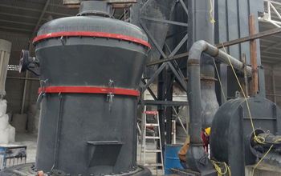

For the purchase of the raymond mill should be more important than the mill machine's production, because only a good choice of excellent quality raymond mill in the late production use in order to better play, but how to choose a good grinder powder machine, how to identify some of the substandard quality of the product has also been a headache for the majority of customers in China, producing mill, Raymond mill manufacturers countless in China. this phenomenon is more common, light a small research and development within the zone can be produced under such machines are not dozens or even hundreds, but then again, the market needs greater the quality of the machine the more complex, there is no uniform quality standards, there is no uniform degree qualified for our customers is certainly not one of the greatest degree of obstruction, so when purchasing raymond mill machinery must be careful.
When purchasing raymond mill machine equipment, the general foreign customers through the network to find some keywords into the number of sales of such equipment manufacturers, it is generally focused on the network we can look at the company's strength situations, such as plant, workshops, etc., but now there will inevitably PS rampant fraud, so remind our customers after the relevant information on the Internet must be field visits to the factory again, and go to their site to the production line for further investigation. Under normal circumstances you want to do more than just these points, if you think that is pretty good regardless of the manufacturer's forces, or the quality of the machine, as well as mill production line, your basis in accordance with these standards, then you will be able to purchase to qualified products.
Raymond mill factory produced a series of milling equipment include: Raymond mill, high-strength mill, high pressure mill and so on. Widely used in barite, calcite, potash feldspar, talc, marble, limestone, dolomite, fluorite, lime, activated clay, activated carbon, bentonite, kaolin, cement, phosphate rock, plaster, glass, insulation materials MO hardness is not greater than 9.3, high fine powder processing humidity below 6% of non-flammable mineral, chemical, construction and other industries more than 280 kinds of materials, R-type Raymond mill product size 80-325 mesh within the scope of any regulation, part of the material up to 600 mesh.
Raymond mill price will vary according to the type and size of the different prices. If you need to quote raymond mill, in determining how much you want to model after raymond mill, will you need a specific type raymond mill and the number of messages to tell us through. We will send you detailed raymond mill prices.
Live chat with our professional customer service! Get the quotation list.
Chat Now